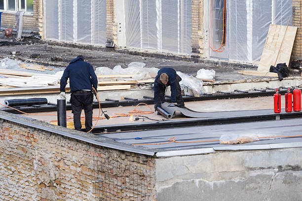

Tell us about the property and the roof issue.
Whether the project involves a home, a business, or a multi-family building, this is the best place to start the roofing conversation.
Phone
(973) 555-0188
info@roofersnewark.com
Service Area
Newark, New Jersey
Serving residential, commercial, and multi-family roofing projects throughout Newark and nearby Essex County communities.
Start your roofing request
Share the property type, what you are seeing with the roof, and what kind of help you think you may need.
Find us
A simple service-area map section for local trust.
This site is built around Newark service coverage, and this block helps the contact page feel more complete for local visitors.
Residential questions
Tell us whether you are seeing a leak, visible wear, or signs that the roof may be reaching replacement age.
Commercial or multi-family projects
Share the property type, timing needs, and whether occupant or operations coordination matters.
Quick answers
Contact page FAQs
What should I include in my message?
Include the property type, your location, what the roof is doing, and whether you think the project may involve repair, replacement, or a new roof plan.
Can I contact you for both small repairs and larger projects?
Yes. This page is designed to support leak response, repair planning, replacement questions, and broader residential, commercial, or multi-family roofing work.
Do you cover Newark only?
The site is branded for Newark, but the service-area message also supports nearby Essex County properties depending on the project needs.